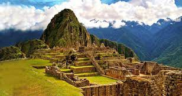
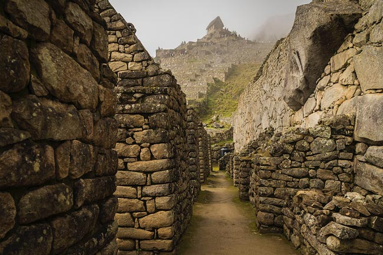
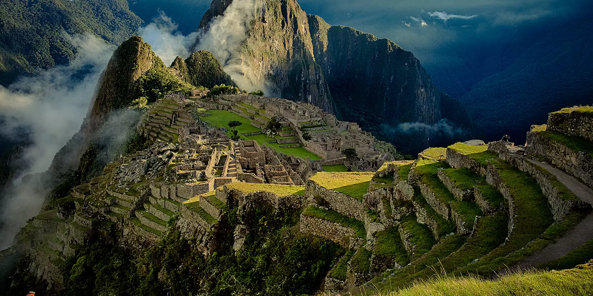
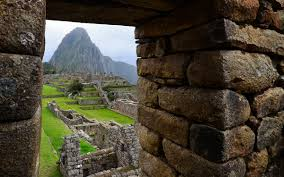

In the Quechua language, machu means "old" or "old person", while pikchu means either "portion of coca being crunched" or "pyramid, pointed multi-sided solid; cone".Thus the name of the site is sometimes interpreted as "old mountain".
Machu Picchu was believed (by Richard L. Burger, professor of anthropology at Yale University) to have been built in the 1450s. However, a 2021 study led by Burger used radiocarbon dating (specifically, AMS) to reveal that Machu Picchu may have been occupied from around 1420-1530 AD. Construction appears to date from two great Inca rulers, Pachacutec Inca Yupanqui (1438–1471) and Túpac Inca Yupanqui (1472–1493). There is a consensus among archeologists that Pachacutec ordered the construction of the royal estate for his use as a retreat, most likely after a successful military campaign. Although Machu Picchu is considered to be a "royal" estate, it would not have been passed down in the line of succession. Rather it was used for 80 years before being abandoned, seemingly because of the Spanish conquests in other parts of the Inca Empire. It is possible that most of its inhabitants died from smallpox introduced by travelers before the Spanish conquistadors arrived in the area.
During its use as a royal estate, it is estimated that about 750 people lived there, with most serving as support staff (yanaconas, yana) who lived there permanently. Though the estate belonged to Pachacutec, religious specialists and temporary specialized workers (mayocs) lived there as well, most likely for the ruler's well-being and enjoyment. During the harsher season, staff dropped down to around a hundred servants and a few religious specialists focused on maintenance alone.
Studies show that according to their skeletal remains, most people who lived there were immigrants from diverse backgrounds. They lacked the chemical markers and osteological markers they would have if they had been living there their whole lives. Instead, there was bone damage from various species of water parasites indigenous to different areas of Peru. There were also varying osteological stressors and varying chemical densities suggesting varying long-term diets characteristic of specific regions that were spaced apart. These diets are composed of varying levels of maize, potatoes, grains, legumes, and fish, but the overall most recent short-term diet for these people was composed of less fish and more corn. This suggests that several of the immigrants were from more coastal areas and moved to Machu Picchu where corn was a larger portion of food intake. Most skeletal remains found at the site had lower levels of arthritis and bone fractures than those found in most sites of the Inca Empire. Inca individuals who had arthritis and bone fractures were typically those who performed heavy physical labor (such as the Mit'a) or served in the Inca military.
Animals are also suspected to have migrated to Machu Picchu as there were several bones found that were not native to the area. Most animal bones found were from llamas and alpacas. These animals naturally live at altitudes of 4,000 meters (13,000 ft) rather than the 2,400 meters (7,900 ft) elevation of Machu Picchu. Most likely, these animals were brought in from the Puna region for meat consumption and for their pelts. Guinea pigs were also found at the site in special tomb caves, suggesting that they were at least used for funerary rituals, as it was common throughout the Inca Empire to use them for sacrifices and meat. Six dogs were also recovered from the site. Due to their placements among the human remains, it is believed that they served as companions of the dead.
| Pictures | |
|---|---|
|  |  |
|  |  |
| Videos | |